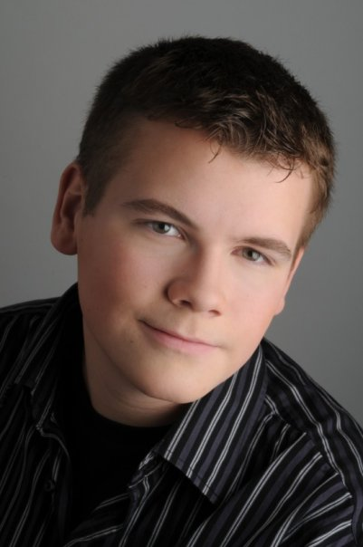

Stuart Alldritt
Biography
Stuart Alldritt is a first year Computer Engineer at the University of Waterloo. He is originally C++ programmer, and especially enjoys working with the Qt Application Framework. Whilst working on projects, he has been introduced to cross-platform compiling, embeded systems programming and design, sensor integration, and system testing. In addition to software interests, Stuart enjoys building and designing the hardware for his projcts. Recent examples include a sensor amplification board for use with industrial-grade force sensors, and a custom control board for a GameCube-to-PC adapter device.
Programming is Stuart's main passion, and as such has experienced several languages over the years, including HTML, PHP, C#, C++, as well as rudimentary Java, ADA and Bash.
Stuart is currently employed at Research In Motion Limited, in the Operating Systems Simulator Research and Development Group.
Projects
Stuart is currently involved with the following ongoing projects
- Autonomous Quadrotor
- Touchscreen Universal Remote
- Gamecube-to-PC Adapter
- Waterloo Maker Group Website